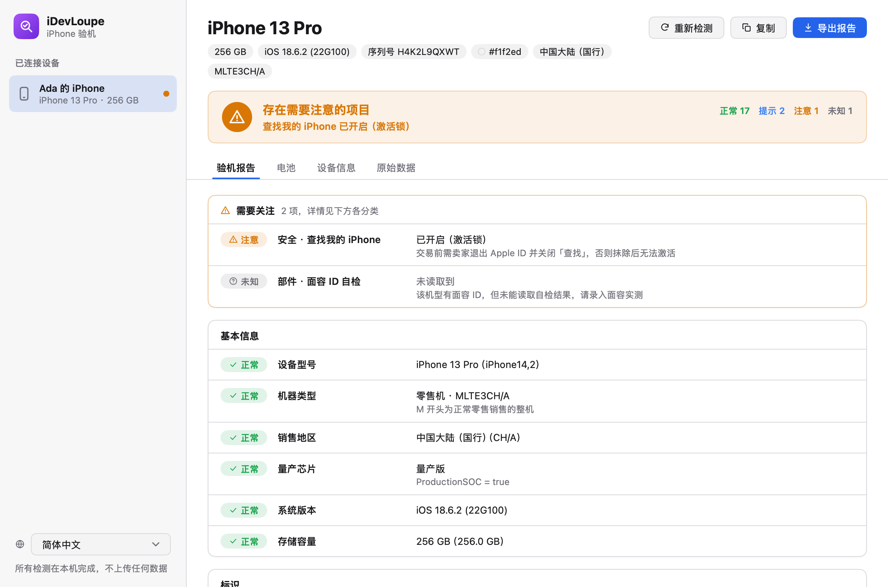

插上数据线，看清这台 iPhone
读取 iPhone 自己报告的硬件、系统与安全信息，逐项给出结论：激活锁、监管锁、电池健康与来源、面容 ID / 指纹、越狱迹象……买二手机、卖机、收机前花一分钟。
macOS · Windows · Linux ｜ 免费开源 ｜ 检测全部在本机完成，不上传任何数据

检查什么
每一项都附上依据；数据读不到就标「未知」，绝不默认通过。
机器身份
型号、销售地区、零售 / 官翻 / 演示机，序列号与 IMEI 校验，多个来源的序列号、型号是否一致。
锁与管理
查找我的 iPhone（激活锁）、监管模式、企业设备注册（DEP / MDM）、描述文件、激活状态。
电池
健康度、循环次数、内阻指标，读取 iOS 分析日志中「设置 > 电池健康」所用的值，识别扩容电池与更换迹象。
面容 ID 与指纹
面容 ID 硬件自检、Touch ID 传感器与出厂校准数据，以及各部件当前报告的序列号。
系统与越狱
越狱应用与 afc2 服务、启动参数、工程机芯片、内部版 / 测试版系统、基带与 SIM 状态。
本机完成，报告可分享
不联网、不上传；手机号与 SIM 卡号不会进入报告。可复制或导出文本 / JSON 报告，支持中文、English、Deutsch。
下载
最新版本，来自 GitHub Releases。
Linux
推荐需要 usbmuxd：sudo apt install usbmuxd（.deb 会自动安装）。
校验文件与历史版本： SHA256SUMS · 全部版本
怎么用
无需登录，无需在手机上装任何东西。
- 用数据线连接电脑打开 iDevLoupe，用 USB 线连接 iPhone，设备会自动出现在左侧。
- 解锁并点「信任」首次连接时，在 iPhone 上选择「信任此电脑」并输入锁屏密码。
- 查看报告约半分钟完成检测，最需要关注的问题列在最上面；可复制或导出报告。
常见问题
macOS 提示「无法验证开发者」？
安装包尚未经过 Apple 签名与公证。在「应用程序」中右键点 iDevLoupe，选「打开」，再在弹窗中点「打开」即可；之后正常双击启动。
Windows 弹出 SmartScreen 警告？
程序尚未签名。点「更多信息」→「仍要运行」。如果提示找不到设备，请确认已安装「Apple 设备」或 iTunes。
能判断屏幕、电池是否原装吗？
能发现不少迹象（扩容电池、循环次数与机龄不符、面容 ID 自检失败等），但 iOS 自己对部件是否原装的判断无法通过数据线读取。报告里的「需人工核对」会提示去「设置 > 通用 > 关于本机 > 部件与维修历史」查看。
会上传我的数据吗？
不会。所有检测在你的电脑上完成，程序不联网。手机号、ICCID、IMSI 读到后立即丢弃，不会出现在报告里。